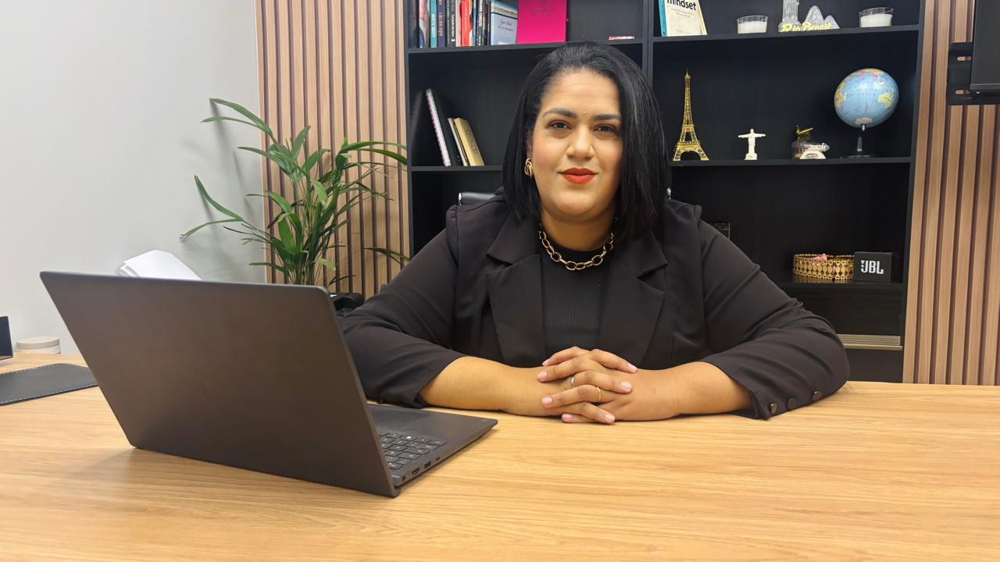
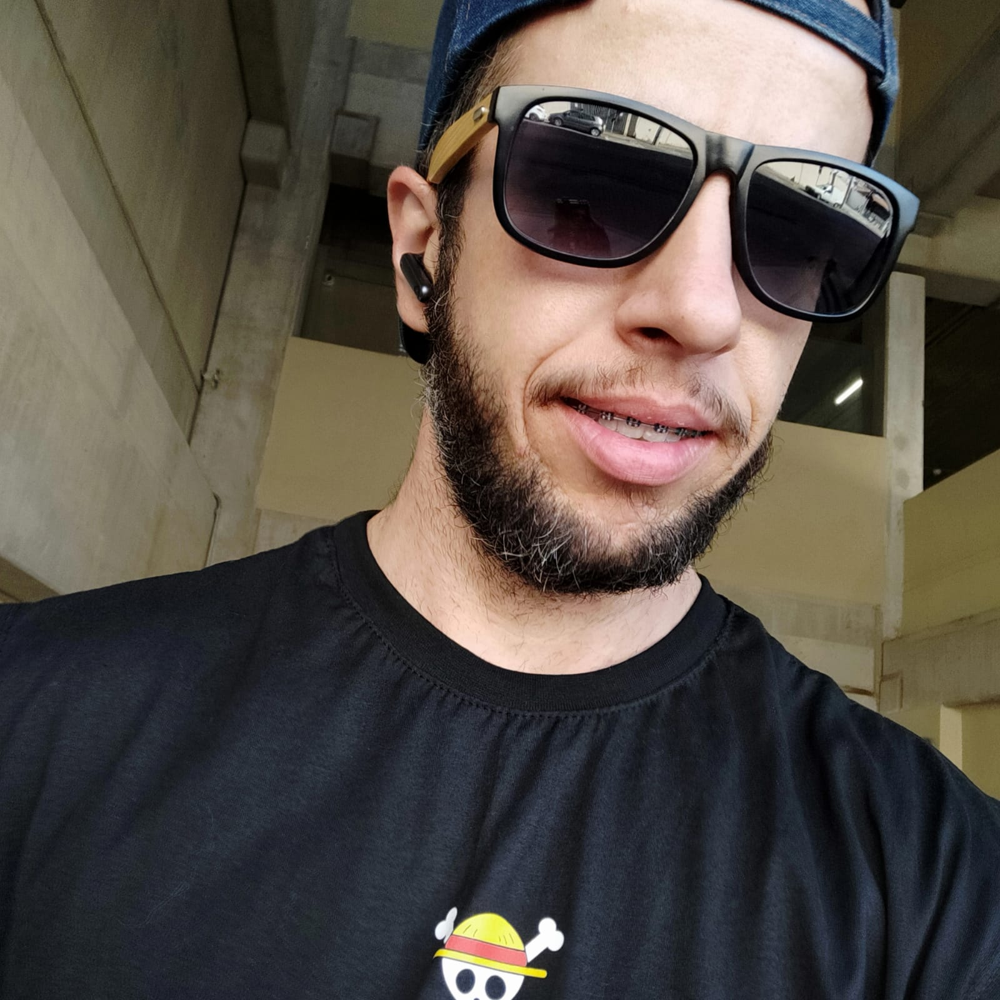
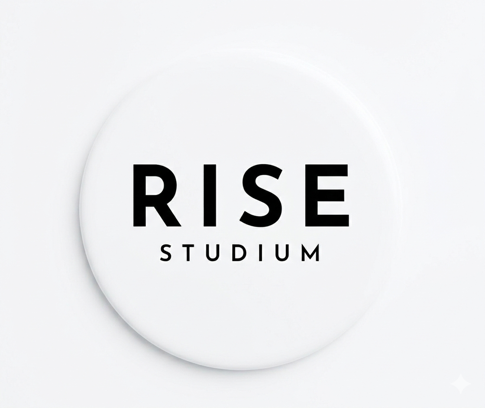
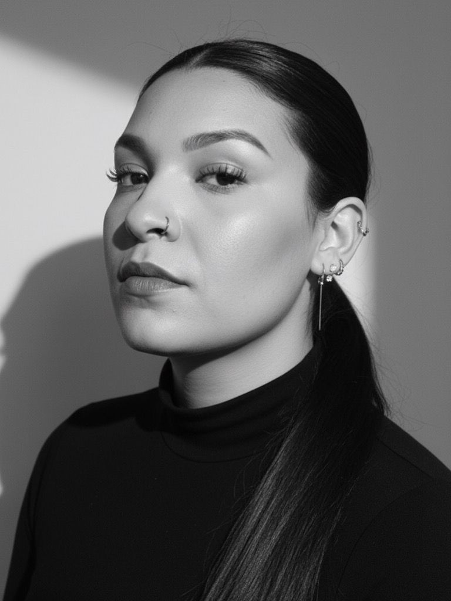

Tire suas dúvidas pelo WhatsApp

Protegendo seu trabalho, seu futuro e seus direitos com excelência técnica.
Agendar Consultoria Online"No Brescia Advocacia Estratégica, acreditamos que o Direito vai muito além de processos, trata-se de pessoas, planos e tranquilidade. Sediado em Hortolândia, o escritório nasceu para oferecer um atendimento onde o rigor técnico caminha lado a lado com a escuta atenta. Entendemos que cada caso carrega uma história única e, por isso, fugimos de soluções prontas. Nossa missão é construir estratégias artesanais, entregando a segurança e a proximidade que você precisa para proteger o que é seu, sempre com transparência e um olhar dedicado a cada vitória."
Bacharel em Direito pela Universidade São Francisco e Pós-graduada pela Faculdade Legale, conto com mais de 7 anos de experiência na linha de frente jurídica.
Minha atuação é pautada pelo equilíbrio entre o rigor técnico e a proximidade com o cliente. Minha missão é traduzir o "juridiquês" em soluções práticas, garantindo que você tenha o suporte necessário para proteger sua carreira, seu futuro e seu patrimônio.
OAB/SP 427.508

"Proteção especializada para o seu acerto trabalhista. Atuamos na reversão de justa causa, cálculos de horas extras, reconhecimento de vínculo sem registro e rescisão indireta. Garantimos que o seu FGTS e todos os seus direitos acumulados por anos de dedicação sejam pagos de forma justa e integral."
"Especialistas em garantir a sua tranquilidade financeira. Realizamos o seu planejamento previdenciário para encontrar a melhor regra de aposentadoria. Atuamos também em casos de auxílio-doença negado, pedidos de pensão por morte e concessão de BPC/LOAS, cuidando de toda a burocracia junto ao INSS."
"Defesa estratégica do seu patrimônio e dos seus direitos do dia a dia. Especialistas em ações de danos morais por cobrança indevida ou nome no SPC/Serasa, revisões de contratos com multas abusivas e indenizações por descumprimento de serviços. Soluções ágeis para conflitos contratuais e de consumo."

"Atendimento de qualidade, uma ótima profissional e consultoria impecável!! Se está precisando de um profissional de respeito, esse é o local."
Felipe S.

"O nosso estúdio tem grande admiração pela Dra. Karoline Brescia. Uma profissional da área trabalhista extremamente competente, ética e dedicada, que transmite segurança e confiança em cada atendimento. Parabéns pelo excelente trabalho!"
Rise S.

"Uma advogada trabalhista séria, atenciosa e muito preparada. Seu compromisso e responsabilidade fazem toda a diferença. Excelente profissional, recomendo!"
Mikaele C.
Carteira de trabalho, holerites, extrato do FGTS e termo de rescisão.
Até 2 anos após a saída da empresa.
Exposições humilhantes e prolongadas durante a jornada.
Sim, desde que comprovada a jornada superior à legal.
Sim, para evitar aposentadorias de valor reduzido.
Cônjuges, filhos menores de 21 anos, pais ou irmãos, desde que comprovada a dependência econômica em alguns casos.
Comprovação de incapacidade via laudos e perícia do INSS.
Benefício para idosos ou deficientes de baixa renda.
Visa compensar prejuízos à honra ou sofrimento psicológico.
Pode-se exigir cumprimento forçado ou rescisão com multa.
Pode gerar devolução em dobro do valor pago.
Buscamos sempre a solução estratégica mais célere.